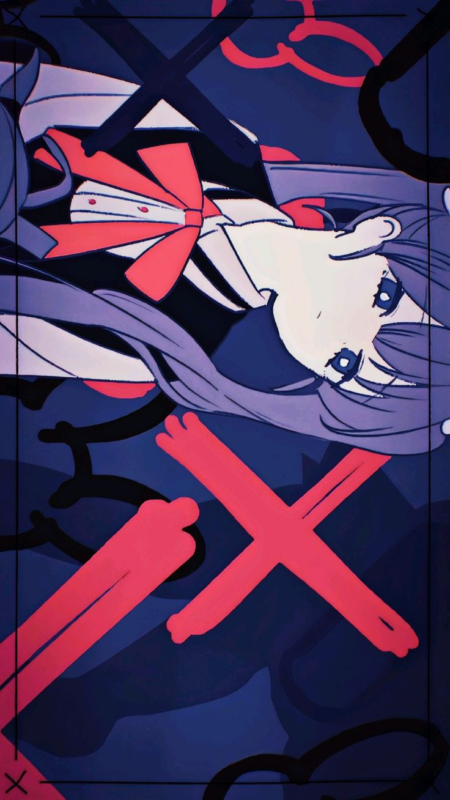
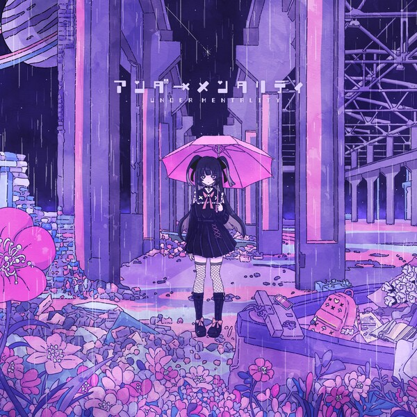

About TUYU
TUYU is a Japanese music unit formed in 2019, mastering the blend of emotional vocals, sharp songwriting, and polished digital production.
Originally consisting of vocalist Rei, composer miro, and guitarist Pusu, their sound fuses J-pop rock with anime-influenced melodies and modern Vocaloid-style production. Their music feels dramatic, expressive, and deeply relatable to the "Under Kids" generation.

It's Raining After All


Released on 02/19/20 - 16M views
Under Kids


Released on 07/27/22 - 22M views